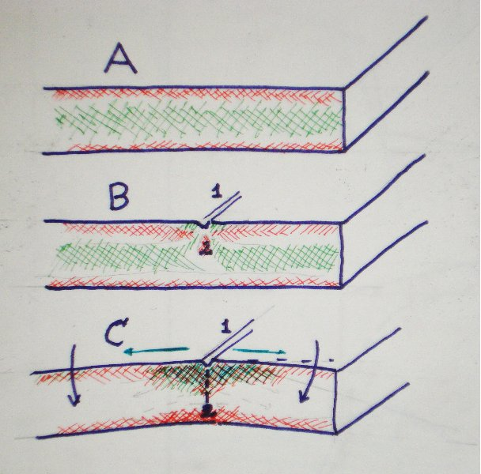

|  leikkauskuva |
Bild A visar spänningar inm en hel skiva. Ytorna är under drag och kärnan är didlängd under trycket..
Bild B visar när spänningen i övre ytan är bruten med skåran. Där finns grag kraft bara bortåt av skåran. Under skåran formas en ostabil tryckområde som också har en tendens att bryta glaset.
Trissan i glasskäraren koncentrerar kraften i mycket små yta. Localt inom mindre ån en kvadratmillimeter är kraften så stark att den krossar ytan. Om manlämnar skåran utan att öppna för en längre tid formas där microsprickor som avlöser en del av spänningen. Sen blir det svårare att öppna skåran. Skäroljan motvärkar avspänningen.
Bild C är situationen när man böjer glaset bortifrån skåran. Det ökar dragkraften på övre sidan och formar trycket mot undersidan. Glaset spricker. sprickan börjar på övre sidan och växer ned. Kvartzatomernas nät bryter fiber efter fiber.